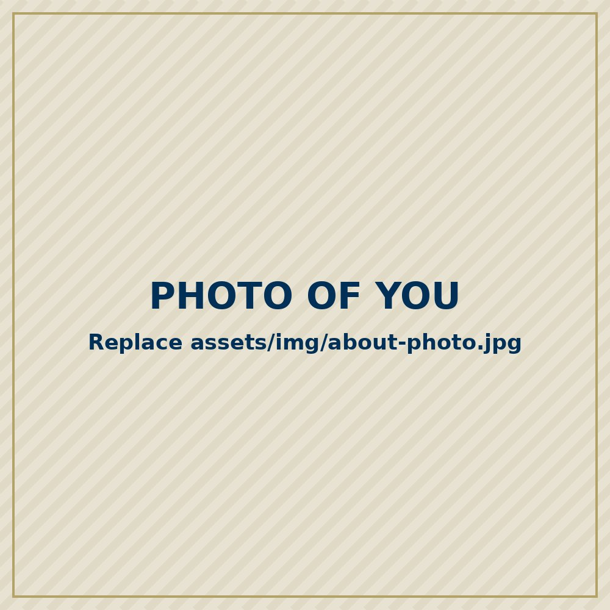

I am a first year Electrical and Computer Engineering student at Georgia Tech. I grew up in your hometown. For as long as I can remember I have wanted to know how things work on the inside.
I did not start with circuits. I started with games. I wanted to make the games I played, not just play them. So I opened Roblox Studio and taught myself to script. My first projects were rough. Things broke all the time. But every bug I fixed taught me something new. That loop of build, break and fix is still how I learn best.
Writing code made me curious about the machine running it. What is actually happening when I press a key? How does a tiny chip turn a button press into a letter on a screen? Software alone could not answer those questions. I wanted to understand the whole stack, from the wires up to the apps.
ECE is the place where both sides meet. In ECE 2020 I am learning how logic gates combine into adders, memory and full processors. In CS 1331 I am learning to write clean object oriented Java. In CS 2050 I am learning the discrete math that sits under all of it. Physics 2 covers the electricity and magnetism that make circuits possible in the first place. Each class fills in a different layer of the same picture.
My Discovery Project brought those layers together. I built a macro keyboard from a bare microcontroller, mechanical switches and a 3D printed case. For the first time I could trace a single key press all the way from the switch to the computer. That project made me sure I picked the right major.
Most of my free time still goes to building. I run a small Roblox studio called MrRobot Games. Right now I am working on two games. One is a chase game called Huss For Your Life. The other is a large multiplayer pirate game called Saltborne. Game development has taught me a lot about planning big projects, writing design documents and testing with real players.
I also love competitive games, mostly Rainbow Six Siege. It is a game about teamwork, communication and quick decisions with little information. Those are skills I use on every group project too. Add a club, sport, job or anything else you do on campus here.
I am curious and I am persistent. When I do not know something I go learn it. When something breaks I stay with it until it works. I like working with people who care about doing things well. I would love to bring that energy to your team.
Georgia Institute of Technology
B.S. Electrical and Computer Engineering
Expected graduation May 2030
ECE 2020 Fundamentals of Digital System Design
CS 1331 Introduction to Object Oriented Programming
CS 2050 Introduction to Discrete Mathematics for CS
PHYS 2212 Introductory Physics II